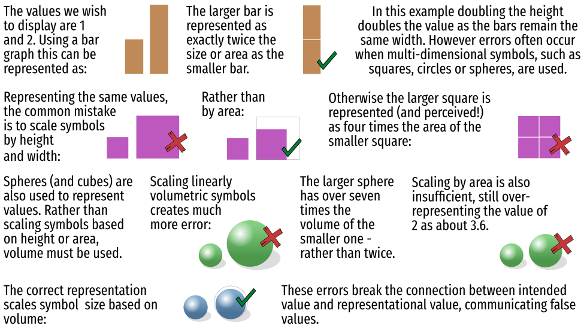

Problem
Too often values are displayed incorrectly as symbols. While bar symbols and the values they represent increase one dimensionally, icons, circles and volumes, such as spheres, depict values exponentially larger than their change in height. These errors occur when individuals oblivious to this phenomenon scale multidimensional symbols based on their heights and as a result display appearances of values that are orders of magnitude too large.
Example

Solution
The tool below allows you to submit your data, submit and visualize their correct relative representations as bars, squares, circles and spheres. These can be easily imported into Adobe Illustrator, Corel Draw or InkScape. Click the Download SVG file button to save the representations to your computer and import them into your preferred graphics program.
Selecting the correct symbol type
The goal of a symbol is to communicate a value, either nominal (existence), ordinal (rank), interval (difference) or rational (absolute value). These symbols should only be used for rational values. Whether we should use a linear, area or volume symbol depends on the relative range of the values (A map with the values 1, 2, 3, 4 will appear the same as one with 1,000, 2,000, 3,000, 4,000).
If the values have a small relative difference then bar symbols may be best. Area symbols are better for moderate value ranges and volumetric symbols for larger relative value ranges.
The question of which symbol type to choose simply comes down to noticeable difference. You wish your different values to appear noticeably different. If you use spheres to display values with little variation it will be rather difficult to tell them apart. Alternatively if you have a very wide range of values and use the bar symbols, the small value symbols will not even be visible.
Test symbol ranges
Click on the three examples below to see how the range of values changes the relative appearance of the different symbols.
Submit your data
Paste your data in the text area below. Note that all values should be separated by white spaces (new line, space, tab) or commas.
Cartographic symbols